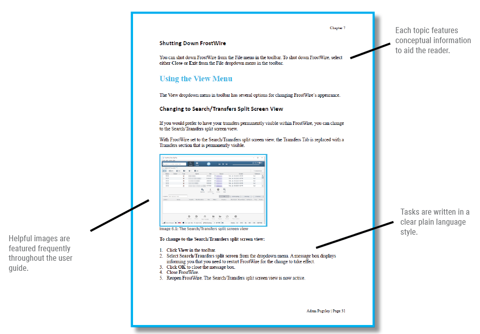
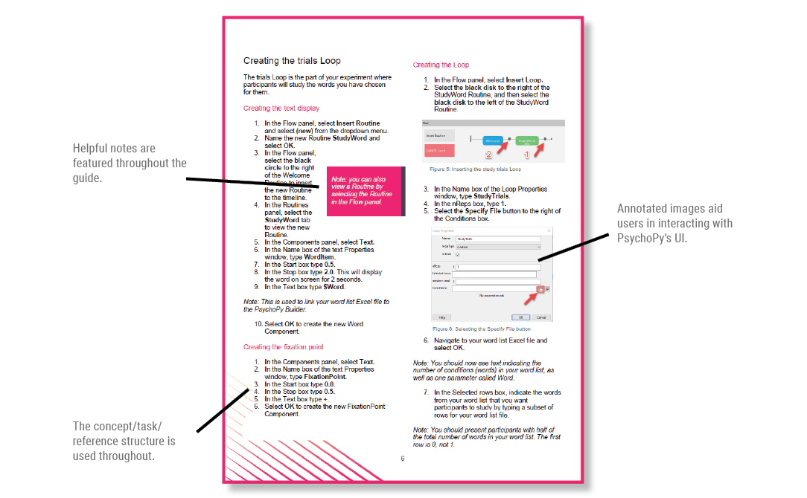

Work Samples
Tulip.io Docs Portal
During my time at Tulip, I wrote a lot of content for their docs portal. These docs were used by retailers and system administrators. I've included some examples of my work below; click the title to view the document.
Tulip Clienteling Getting Started Guide

Tulip Appointments content refresh
LiveConnect x LINE social integration guide
FrostWire 6 User Guide
FrostWire is an open-source, peer-to-peer BitTorrent software. They didn't have a user guide, so I wrote one using Adobe FrameMaker.
Project goal
The aim of this project was to create a high-quality user guide that covers the full functionality of the software. Good documentation anticipates the needs of the user. I kept that in mind while designing this guide.
Download
Web Help Version
After writing the print version of the user guide, I used MadCap Flare to create an online help site. Good web documentation is an important part of any documentation strategy.
Key takeaways
- Used Adobe FrameMaker and MadCap Flare to create a print-ready user guide and online help website.
- Created a user-friendly information architecture.
- Used plain language principles resulting in a clear and concise style.
- Included relevant graphics with callouts and labels.
- The PDF version is fully indexed, cross-referenced and clickable.
Creating a Memory Test using PsychoPy
PsychoPy is an open-source software tool used to create psychology and neuroscience experiments. I wanted to write a document that walks users through the task of creating a recognition memory experiment using the software. Written with Microsoft Word.
Project goal
The aim here was to create an easy to follow guide that is both informative and visually appealing.
Download
Key takeaways
- Features a variety of helpful screenshots captured and edited with SnagIt to assist readers.
- Uses the concept, task and reference information structure.
- Solves a problem for users of PsychoPy and allows them to easily create their own experiment.
Whitepaper: Brain-Computer Interfaces
I wrote this whitepaper to provide an overview of some of the recent advances in the world of consumer oriented brain-computer interfaces. Made with Microsoft Word.
Project goal
To help readers understand the trends taking place in a new field of consumer products.
Download
Key takeaways
- Presented the right way, a seemingly complex topic can be made easy to understand.
- Understanding trends in technology and explaining them in a clear and direct voice is an important skill I have at my disposal.
Plain Language Improvements
Does your documentation look like this? This wall of text was taken from the City of Vancouver's Noise Control Manual. It's difficult to read, full of irrelevant information, and far too long.
Project goal
I wanted to improve the readability of the text by rewriting it using plain language best practices.
Download
Key takeaways
- Less is more. I kept only what was essential.
- I broke the text down into digestible chunks, and used whitespace to make it easier to scan for information.